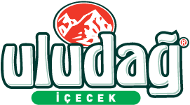

Değerli Sponsorlarımız
Katkılarından dolayı teşekkür ederiz.


📅 16 Şubat 2026
📍 Konya Gıda ve Tarım Üniversitesi
(Detay için logoya tıkla)
G-Talks; tarım, teknoloji, akademi ve sosyal fayda alanlarında bilgi paylaşımını ve yenilikçi düşünceyi merkeze alan bir platformdur.
Gelecek programlarımız ve alanlarımız:
Konuk: Atiker
Yer: KGTÜ Konferans Salonu
🚧 Yakında Hizmetinizde
🚧 Yakında Hizmetinizde
🚧 Yakında Hizmetinizde
Katkılarından dolayı teşekkür ederiz.